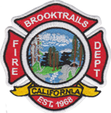

Neighbors serving neighbors
All-risk response for Brooktrails, Spring Creek & Sylvandale.
The department serves these forest communities and its surrounding sphere of influence with fire response, basic life support, rescue, prevention, and mutual aid across Mendocino County.
Prepare now
Wildfire readiness is a household practice.
Use more than one source for alerts, know your evacuation zone, maintain defensible space, and leave early if conditions feel unsafe.
Burn permits
Check both fire safety and air quality before burning.
Brooktrails does not determine burn season. CAL FIRE and the Mendocino County Air Quality Management District control the applicable burn status and requirements. Always recheck on the day you plan to burn.
Station contact
Brooktrails Fire Department
24860 Birch StreetWillits, CA 95490-9475707-459-4441fireprev@btcsd.orgFax: 707-459-1517